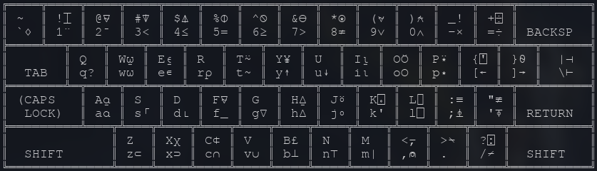

Figura 1: Alegoria para a linguagem APL.
As últimas semanas das minhas férias têm sido muito movimentadas. Gastei um bom tempo lendo e colocando em dia alguns artigos que eu precisava ter adiantado, mas que não pude por falta de tempo.
Uma das coisas nas quais resolvi me concentrar foi no meu aprendizado de uma linguagem chamada APL, que me deixou curioso porque haviam me dito que era boa para resolver problemas com vetores e matrizes. Mas esta linguagem também é cheia de símbolos Unicode, o que me afastou dela por medo de complexidade no código.
Pois bem, após insistir (e ter uma ajudinha do editor de texto Emacs para inserir símbolos!), compartilho aqui com vocês uma pequena aplicação que fiz para escalonar matrizes através de reduções de Gauss-Jordan.
Caso você queira ver o código completo sem o texto, poderá ver neste gist do GitHub.
NOTA: O código mostrado aqui funcionará apenas em GNU APL. Se você quiser um código compatível com Dyalog APL, veja o final desta postagem.
A linguagem APL
Segundo a Wikipedia e a APL Wiki, APL é derivada de uma notação matemática criada em meados de 1950 por Kenneth E. Iverson, em Harvard. Em 1962, Iverson lançou um livro chamado A Programming Language, que demonstrava esta notação para descrever operações em matrizes multidimensionais, de forma que um computador pudesse compreendê-las e executá-las. Eventualmente, Iverson juntou-se à IBM, onde implementou sua linguagem em um IBM 1130, e nomeou-a APL, de acordo com as primeiras letras do nome de seu livro.

Figura 2: Esquema de teclado para GNU APL, no Emacs.
APL é uma linguagem incomum para os dias de hoje, principalmente porque seu uso exige a escrita de símbolos específicos, o que atualmente só pode ser feito em teclados comuns com uso de software adicional. Todavia, computadores modernos ainda possuem esquemas de digitação para APL, o que torna o uso da linguagem algo surpreendentemente trivial.
Para o código que vou mostrar aqui, usei um esquema de escrita no
editor de texto Emacs. A entrada dos caracteres da linguagem pode ser
feita através de uma tecla especial, ou escrevendo o caractere .,
seguido de um outro caractere válido; esta combinação é então
transformada em um caractere Unicode específico.
ATENÇÃO: É importante que sua fonte monoespaçada do navegador tenha suporte a caracteres da linguagem APL para que você consiga ver o código! Para tanto, veja se estes caracteres…
¨¯⌽≥⊖⎕∘↑→_¯∩⊃
…são mostrados como nesta figura:
Figura 3: Alguns caracteres especiais da linguagem APL.
Caso eles não estejam sendo renderizados adequadamente, recomendo utilizar a fonte GNU FreeFont, ou alguma das fontes recomendadas para Dyalog que estão aqui.
Método de Escalonamento de Gauss-Jordan
Antes de mais nada, vamos falar um pouquinho de Matemática, porque é de lá que APL vem. Mas não se assuste, só quero explicar o que diabos é isso de escalonamento e de Gauss-Jordan, caso você não saiba.
Suponha o seguinte problema:
Pedro, Maria e Júlia ganharam maçãs. Sobre a quantidade que cada um ganhou, sabemos o seguinte:
- A soma entre as uma vez maçãs de Pedro, o triplo das maçãs de Maria e quatro vezes as maçãs de Júlia é igual a 53.
- A soma entre seis vezes as maçãs de Pedro, sete vezes as maçãs de Maria, e o dobro das maçãs de Júlia é igual a 109.
- A soma entre cinco vezes as maçãs de Pedro, uma vez as maçãs de Maria e o triplo das maçãs de Júlia é igual a 76.
Qual o número de maçãs que cada um recebeu?
Podemos modelar este problema com um sistema simples de equações. Vamos supor que a quantidade de maçãs de Pedro seja \(x\), a de Maria seja \(y\), e a de Júlia seja \(z\):
\begin{equation*} \begin{cases} x + 3y + 4z = 53\\ 6x + 7y + 2z = 109\\ 5x + y + 3z = 76 \end{cases} \end{equation*}Este é um problema simples que pode ser resolvido sem adentrar o tópico de matrizes, através de substituições sucessivas. Mas não é resolver este problema em APL que é algo interessante para nós: o que nós queremos é resolver problemas como este, através do auxílio do computador!
O que normalmente fazemos nas aulas de Álgebra Linear é representar esta situação através de uma matriz com os coeficientes e os valores após o sinal de igualdade. Veja:
\begin{bmatrix} 1 & 3 & 4 & 53\\ 6 & 7 & 2 & 109\\ 5 & 1 & 3 & 76 \end{bmatrix}O processo na Matemática para solucionar este problema linear, usando matrizes, chama-se Processo de Gauss-Jordan, consistindo em efetuar Eliminações Gaussianas para cada linha, até que sobre apenas uma matriz-identidade com uma coluna extra de valores, desse jeito:
\begin{bmatrix} 1 & 0 & 0 & 10\\ 0 & 1 & 0 & 5\\ 0 & 0 & 1 & 7 \end{bmatrix}Veja que, se nós fôssemos reescrever esta matriz no formato de equações, considerando a mesma equivalência para os coeficientes que utilizamos para essa tradução em primeiro lugar, teríamos estas equações aqui:
\begin{equation*} \begin{cases} x + 0y + 0z = 10\\ 0x + y + 0z = 5\\ 0x + 0y + z = 7 \end{cases} \quad \Rightarrow \quad \begin{cases} x = 10\\ y = 5\\ z = 7 \end{cases} \end{equation*}Esse processo de gerar a matriz-identidade de um lado é conhecido como escalonamento, e o processo normalmente ensinado para fazê-lo é o método de Gauss-Jordan.
Este método pode ser descrito como uma sequência de passos para manipularmos a matriz. E claro, se há sequência de passos, então o computador consegue resolver! Quando programarmos este comportamento, deixarei mais claro o que precisa ocorrer para efetuarmos estes cálculos.
Gauss-Jordan em APL
Vamos implementar esta ferramenta que nos permite resolver problemas lineares, como é o caso do problema das maçãs. Mas antes disso, vamos criar algumas outras ferramentas que vão nos ajudar tanto nas implementações quanto ao gerar matrizes para testes.
Uma coisa importante a destacar é que não pretendo tornar este post uma espécie de tutorial para APL, portanto, as descrições das funções serão superficiais.
Caso você esteja curioso quanto à linguagem, poderá consultar a página com minhas notas sobre APL, que fiz para que eu mesmo pudesse consultar em caso de dúvidas. Lá, há links que você pode seguir para aprendê-la.
Caixa de Ferramentas
IDENTITY
Esta função gera uma matriz-identidade de ordem N. Matrizes-identidade
são matrizes quadradas (mesmo número de linhas e colunas) que possuem
apenas o número 1 em sua diagonal principal, e 0 em todas as outras
posições.
Note que as funções de APL podem possuir uma variável de retorno
(normalmente nomeio-a R). No caso de IDENTITY, trata-se de uma função
de um parâmetro, que nomeei N.
Veja o código, levando em consideração que APL interpreta cada linha de expressão da direita para a esquerda, diferente do convencional. Esta regra evita alguns problemas de ambiguidade sintática, juntamente com outras que não mencionarei aqui.
∇R←IDENTITY N R←(N N)⍴(1,N⍴0) ∇
IDENTITY gera uma matriz N×N, e escreve em cada linha desta matriz
a sequência de um número 1 e N números 0. Caso alguma sequência de
números "sobre", ela será escrita no início da próxima linha. E quando
não houver mais números 1 ou 0 a serem escritos, essa sequência de 1's
e 0's se repete. Veja:
1,3⍴0
1 0 0 0
3 3⍴(1,3⍴0)
1 0 0
0 1 0
0 0 1
- Sobre parâmetros de funções em APL
A noção de parâmetros de uma função em APL é diferente do que normalmente vemos em outras linguagens. Aqui, uma função pode ter os seguintes números de parâmetros: zero (niládica), um (monádica) ou dois (diádica). Uma função sem parâmetros não indica nenhum parâmetro em seu cabeçalho (a linha com o primeiro Del,
∇). Uma função com um parâmetro informa-o à direita do nome da mesma, e uma função diádica informa um parâmetro à esquerda do nome, e outro à direita do nome.A função
IDENTITYé uma função monádica e com valor de retorno.
EXTENDBOTTOM
Esta função adiciona uma nova linha com zeros na parte inferior da matriz. Esta função independe do tamanho da matriz, que é deduzido durante a operação.
∇R←EXTENDBOTTOM MAT R←(((↑⍴MAT)⍴1),0)\[1]MAT ∇
Veja o que acontece quando aplicamos ela a uma matriz-identidade de
dimensões 3×3:
EXTENDBOTTOM IDENTITY 3
1 0 0
0 1 0
0 0 1
0 0 0
Esta função não possui uso na implementação do escalonamento em si, mas serve para ajudar a gerar algumas matrizes de teste.
EXTENDRIGHT
Similar a EXTENDBOTTOM, esta função adiciona uma nova coluna de zeros
à direita da matriz.
∇R←EXTENDRIGHT MAT R←(((2⌷⍴MAT)⍴1),0)\MAT ∇
Aplicando esta operação a uma matriz-identidade 3×3, temos:
EXTENDRIGHT IDENTITY 3
1 0 0 0
0 1 0 0
0 0 1 0
Também utilizaremos esta função para criar matrizes para testes.
PIVOT
Agora, faremos uma função diádica que coleta o pivô de uma matriz MAT,
na linha N. Se a linha não possui pivô, retornamos uma resposta
vazia.
Antes de mais nada, vejamos o que é um pivô de uma certa linha. Suponha a seguinte matriz:
\begin{bmatrix} 5 & 3 & 7\\ 0 & 0 & 2\\ 0 & 4 & 9 \end{bmatrix}
O pivô de uma linha da matriz é o primeiro elemento da linha que,
quando procuramos da esquerda para direita nela, não seja nulo. Sendo
assim, os pivôs de cada linha da matriz serão 5, 2 e 4,
respectivamente.
Vejamos como isto pode ser feito em APL. Como já dito, a função PIVOT
é uma função diádica (seus parâmetros são N e MAT), que possui os
valores locais LST e IDX (que precisam ser indicados no cabeçalho da
função, ou serão redeclarados como variáveis globais).
∇R←N PIVOT MAT;LST;IDX LST←N⌷[1]MAT IDX←(0≠LST)⍳1 →(IDX>⍴LST)/0 R←IDX⌷LST ∇
Aqui temos a variável LST armazenando temporariamente a linha onde
precisamos encontrar o pivô. Por exemplo, podemos ter LST valendo 0 4
9.
A variável IDX será um valor que armazena o índice do primeiro
elemento não-nulo de LST. Por exemplo, para o valor de LST que estamos
supondo, IDX valerá 2 (segunda posição na linha).
Se IDX for um valor maior do que o número de elementos naquela linha,
então nenhum pivô foi encontrado, e a linha é nula; neste caso,
encerramos a função, sem dar uma resposta.
Caso tudo tenha corrido bem, a variável de retorno recebe o elemento
de LST que está na posição IDX.
GCD
Esta é a primeira função no nosso código que realmente tem alguma espécie de estrutura de repetição.
Esta operação é o algoritmo trivial de Euclides para calcular o máximo
divisor comum entre dois números. Convencionaremos que A seja sempre
maior que B, para que este algoritmo funcione adequadamente.
Vou me abster de explicá-la totalmente, porque esta função é simples e óbvia (alguns autores dizem que é o algoritmo mais velho do mundo!).
∇R←A GCD B →(B=0)/END (A B)←(B (|B | A)) →1 END: R←A ∇
Veja que, sendo uma função diádica, GCD precisa ser escrita entre
ambos os números:
99 GCD 63
9
- Sobre controle de fluxo em APL
Como você deve ter visto, não utilizei nenhum tipo de estrutura de controle (if…else), e nenhuma estrutura de repetição (loop, while, for). O motivo é que a especificação padrão de APL não determina a existência destas estruturas.
Isto não significa que APLs não têm estas estruturas. Elas podem ser facilmente implementadas através de alguns macros na linguagem. APLs com mais ferramentas, como Dyalog APL, possuem estas estruturas; alguns outros APLs (como o próprio GNU APL) possuem editores de texto embutidos, ou extensões para modificarmos funções que já foram redefinidas no ambiente (tecnicamente, isto significa que arquivos de código de APL são desnecessários – de fato, APLs possuem ferramentas para salvar workspaces).
Como GNU APL é mais simples (não sendo menos potente que outros APLs), ao invés de estruturas de controle, utilizamos a função GoTo (
→) que, como o nome sugere, pula para uma certa linha da função em que está; se a linha for inexistente, a função é encerrada imediatamente, independente de existir valor de retorno.Esta função é utilizada com o operador Compress (
/diádico) para determinar se o pulo deve ou não ocorrer. Por exemplo, na primeira linha deGCD, o pulo só ocorre seBfor igual a0; isto retorna um valor1, e APL retorna a linha atribuída ao rótuloEND.Se este não fosse o caso, APL não daria nenhum valor à função GoTo (
→) – o uso de Compress com um primeiro argumento0retorna uma resposta vazia –, e nenhum pulo ocorreria.
SIMPVEC
Esta função monádica simplifica um certo vetor de elementos, dividindo todos pelo máximo divisor comum da porção inteira de todos os números.
Note que o vetor só será realmente simplificado se nenhum dos elementos tornar-se um número fracionário. Decidi fazer isso porque não queria nenhum número "quebrado" em meus resultados.
∇R←SIMPVEC VEC;SIMPL SIMPL←VEC÷GCD/⌊|VEC[⍒|VEC] →(×+/0<SIMPL-⌊SIMPL)/DONTSIMPL R←SIMPL →0 DONTSIMPL:R←VEC ∇
Vejamos a aplicação desta função:
SIMPVEC 4 2 8
2 1 4
- Sobre operadores em APL
Note que
SIMPVECutiliza nossa outra funçãoGCD. E sua aparição é peculiar, porque não é utilizada da forma esperada –GCDparece ser monádica dentro deSIMPVEC.A razão para isso é o uso do operador Reduce (
/monádico; a função aplicada aparece à esquerda, mas não é um parâmetro). Em APL, operadores são "funções" especiais, que modificam a forma como funções são aplicadas a outros parâmetros.Por exemplo, suponha o vetor
A, contendo os números4 5 8 2. Se eu precisasse calcular a soma entre todos estes números, a forma de escrita que nos vem à mente é esta:4 + 5 + 8 + 2
Veja que a função Soma (
+) é intercalada entre os elementos do vetor. Para obtermos este comportamento, basta utilizarmos a função Soma (+) com o operador Reduce (/):+/4 5 8 2 19O raciocínio para o uso de
GCDé o mesmo; é como se intercalássemosGCDe fôssemos executando da esquerda para a direita.
Operações fundamentais
Agora que temos as operações fundamentais, podemos implementar o método de escalonamento de Gauss-Jordan. Faremos isto com duas funções.
Eliminação Gaussiana
A função GAUSSELIM é uma função diádica, que fixa uma linha de índice
L na matriz A, e executa operações nas outras linhas, de forma que o
pivô da linha L seja o único elemento não-nulo de sua coluna.
Vejamos o que isto significa com notação matemática. Vamos ver a matriz do problema das maçãs:
\begin{bmatrix} 1 & 3 & 4 & 53\\ 6 & 7 & 2 & 109\\ 5 & 1 & 3 & 76 \end{bmatrix}
Suponhamos que desejamos fixar a primeira linha. Sendo assim, temos L
= 1.
O pivô da linha 1 é o número 1. Portanto, os números que estão na
mesma coluna (6 e 5) precisam ser zerados.
Para efeito de exemplo, vamos zerar a linha 2. Para tanto,
realizaremos o seguinte algoritmo:
- Multiplique os elementos da linha
2pelo pivô da linha fixada; - Multiplique os elementos da linha fixada pelo pivô da linha
2; - Subtraia as linhas geradas, armazene na linha não-fixada (
2).
E o mesmo processo seria feito para a linha 3.
Em APL, o primeiro a ser feito é simplificar a linha fixada. Para
isso, aplicamos a função SIMPVEC na linha L. Este não é um passo
obrigatório, mas garante números menores no processo.
Depois, geramos uma lista de números de linhas sequenciais. Para a nossa matriz das maçãs, teríamos uma lista assim:
⍳3
1 2 3
Desta lista gerada, removemos a linha fixada (L = 1), e armazenamos o
resultado na variável local ZEROLNS.
Agora, para cada índice de linha em ZEROLNS, aplicamos o processo
descrito anteriormente. Isto é feito com uma função anônima declarada
inline. O operador Each (¨) garante que esta função seja aplicada a
cada elemento de ZEROLNS, em sequência.
A nova matriz é então armazenada na variável de resultado.
∇R←L GAUSSELIM A;ZEROLNS →(0=+/|A[L;])/END A[L;]←(×L PIVOT A)×SIMPVEC A[L;] ZEROLNS←(~L=ZEROLNS)/ZEROLNS←⍳↑⍴A R←{A[⍵;]←((L PIVOT A)×A[⍵;])-(A[⍵;L]×A[L;])}¨ZEROLNS END:R←A ∇
Aplicando eliminação gaussiana, ao tomarmos a primeira linha do problema como fixa, teremos:
1 GAUSSELIM A
1 3 4 53
0 ¯11 ¯22 ¯209
0 ¯14 ¯17 ¯189
- Sobre funções anônimas em APL
Um aspecto importante da programação funcional é a possibilidade de declarar funções sem um nome definido, e manipulá-las como se fossem valores, repassando-as como parâmetros, por exemplo.
A maioria das implementações modernas de APL possuem algum suporte a expressões lambda. Em GNU APL, elas são tratadas como funções possivelmente diádicas que sempre retornam algum valor:
{⍵ + 2} 5 ⍝ Monádica 7 2 {⍺ + ⍵} 3 ⍝ Diádica, notação infixa 5 {⍺ + ⍵}/2 3 4 5 ⍝ Diádica, aplicada via Reduce 14
Escalonamento
A função GAUSSJORDAN é uma função monádica que realiza o escalonamento
completo de uma matriz. Seu algoritmo é simples: para cada linha da
matriz, realize uma eliminação gaussiana, tomando-a como fixa.
No final do processo, tudo o que temos que fazer é realizar uma simplificação extra em todas as linhas, e então repassar a nova matriz ao valor de retorno.
∇R←GAUSSJORDAN MAT
R←{MAT←⍵ GAUSSELIM MAT}¨⍳↑⍴MAT
R←{MAT[⍵;]←SIMPVEC MAT[⍵;]}¨⍳↑⍴MAT
R←MAT
∇
Realizando testes
Está pronto o nosso programa que realiza escalonamentos de matrizes. Podemos testá-lo agora, e aproveitar também para discutir e provar propriedades de algumas matrizes.
Problema das Maçãs
Se criarmos uma matriz PMJ com os dados do problema passado
inicialmente, veremos que a matriz escalonada bate com o resultado
apresentado:
PMJ←3 4⍴1 3 4 53 6 7 2 109 5 1 3 76
PMJ
1 3 4 53
6 7 2 109
5 1 3 76
GAUSSJORDAN PMJ
1 0 0 10
0 1 0 5
0 0 1 7
Sistemas com soluções nulas
Podemos verificar também o mesmo para um sistema com solução zero, gerado com números aleatórios e com todas as equações iguais a zero:
A←EXTENDRIGHT 3 3⍴7?7
A
1 4 3 0
7 6 2 0
5 1 4 0
GAUSSJORDAN A
1 0 0 0
0 1 0 0
0 0 1 0
Outros Sistemas Possíveis
Podemos também testar o método de Gauss-Jordan para outros sistemas que possuem soluções. Aqui definimos duas matrizes e imprimimo-nas lado a lado, antes e depois do escalonamento:
B←3 4⍴2 1 ¯1 8 ¯3 ¯1 2 ¯11 ¯2 1 2 ¯3
C←3 5⍴2 4 1 0 1 0 2 2 ¯8 6 3 0 2 0 0
(B C)
2 1 ¯1 8 2 4 1 0 1
¯3 ¯1 2 ¯11 0 2 2 ¯8 6
¯2 1 2 ¯3 3 0 2 0 0
{GAUSSJORDAN ⍵}¨(B C)
1 0 0 2 13 0 0 32 ¯22
0 1 0 3 0 13 0 ¯4 6
0 0 1 ¯1 0 0 13 ¯48 33
Veja que não há matriz-identidade na parte esquerda da matriz C. Isto
diz respeito ao algoritmo de simplificação, que evita gerar números
fracionários. No caso dela, bastaria dividir as três linhas por 13
para obtermos a resposta.
Sistemas impossíveis
Alguns sistemas de equações são impossíveis de serem
resolvidos. Considere a matriz D na saída abaixo.
D←3 4⍴1 3 13 9 0 1 5 2 0 ¯2 ¯10 ¯8
D
1 3 13 9
0 1 5 2
0 ¯2 ¯10 ¯8
GAUSSJORDAN D
1 0 ¯2 5
0 1 5 ¯3
0 0 0 1
A matriz D corresponde ao conjunto de equações:
Infelizmente, seu escalonamento não sugere uma solução matematicamente válida:
\begin{equation*} \begin{cases} x - 2z = 5\\ y + 5z = 2\\ 0 = 1\\ \end{cases} \end{equation*}Como todos os coeficientes foram zerados na terceira linha, e a "parte aumentada" (correspondente à parte após o sinal de igualdade) não foi zerada para esta mesma linha, caímos em um resultado absurdo. Isto significa que não existe solução para as equações iniciais.
O mesmo pode ser observado para a matriz E abaixo. Neste caso, ao
invés de uma única coluna na "parte aumentada", temos três colunas,
correspondentes a uma matriz identidade do lado direito:
E←(3 3⍴1 2 3 1 1 2 0 1 1),IDENTITY 3
E
1 2 3 1 0 0
1 1 2 0 1 0
0 1 1 0 0 1
GAUSSJORDAN E
1 0 1 ¯2 3 1
0 1 1 0 0 1
0 0 0 1 ¯1 ¯1
O mesmo problema ocorre para o escalonamento de E. Todavia, como
colocamos uma matriz identidade catenada ao lado direito de E, este
resultado significa que E é uma matriz singular, ou seja, não possui
matriz inversa.
Matrizes inversas
Pelo mesma forma como descobrimos que E é uma matriz singular, podemos
criar as matrizes F e G, e veremos que elas, sim, são
inversíveis. Veja que catenamos a matriz-identidade a elas apenas ao
realizar Gauss-Jordan, contrário ao que fizemos em E:
F←(3 3⍴1 2 3 1 1 2 0 1 2)
G←4 4⍴2 ¯2 6 2 3 4 1 1 1 2 3 4 ¯1 ¯4 0 0
(F G)
1 2 3 2 ¯2 6 2
1 1 2 3 4 1 1
0 1 2 1 2 3 4
¯1 ¯4 0 0
{GAUSSJORDAN ⍵,IDENTITY 2⌷[1]⍴⍵}¨(F G)
1 0 0 0 1 ¯1 63 0 0 0 ¯2 36 ¯8 33
0 1 0 2 ¯2 ¯1 0 126 0 0 1 ¯18 4 ¯48
0 0 1 ¯1 1 1 0 0 21 0 5 ¯6 ¯1 ¯9
0 0 0 63 ¯11 9 19 24
Aqui podemos ver que, no caso de F (à esquerda), como a parte original
da matriz transformou-se na matriz-identidade, toda a parte aumentada
apresentada corresponde à matriz inversa de F (matematicamente,
\(F^{-1}\)).
No caso de G (à direita), ainda não temos a matriz identidade, mas
falta apenas um passo para tal: dividir cada linha por seu respectivo
pivô. De qualquer forma, como não há linha nula na parte original da
matriz, podemos constatar que a matriz G é inversível.
Invertendo matrizes em APL puro
Este último passo é, na realidade, redundante. APL possui uma função
Dominó (⌹) que, quando usada de forma monádica, calcula a inversa de
uma certa matriz. Compare estes dois resultados:
⌹F
¯1.5258556E¯16 1 ¯1
2.0000000E0 ¯2 ¯1
¯1.0000000E0 1 1
¯3↑[2]GAUSSJORDAN F,IDENTITY 3
0 1 ¯1
2 ¯2 ¯1
¯1 1 1
Veja que o resultado dado pela função Dominó (⌹) não é exatamente o
mesmo, porque ela utiliza outros métodos e trabalha com pontos
flutuantes. Porém, podemos observar que o valor ¯1.5258556E¯16,
que corresponde aproximadamente a -0.00000000000000015258556, é um
valor bem próximo do requerido (0). Este tipo de ruído relacionado a
pontos flutuantes é esperado, e portanto pode ser mais interessante
utilizar o Dominó (⌹) que programar todo o processo de Gauss-Jordan.
Suporte a Dyalog APL
Assim como em outras linguagens, existem várias implementações de APLs que são utilizadas no mercado. Uma delas é o Dyalog APL, que possui recursos avançados como suporte a Orientação a Objetos, interoperabilidade com .NET e Windows Forms, suporte a algumas estruturas de controle, interoperabilidade com a linguagem R, etc.
Se você digitou diretamente o código aqui mostrado em Dyalog APL,
provavelmente percebeu que muitos erros apareceram; alguns
relacionados à aplicação de Compress (/) a definições de variáveis,
uso incorreto de Take (↑), alguns resultados podem não ter aparecido
corretamente, enfim, uma gama de coisas.
Como este artigo não é para explicar totalmente a linguagem ou quaisquer dialetos, resguardo-me apenas a fornecer uma implementação completa dos códigos mostrados aqui. Veja que os nomes das funções e o estilo do código podem variar.
Identity←{(⍵ ⍵)⍴(1,⍵⍴0)} ExtendBottom←{(((1↑⍴⍵)⍴1),0)\[1]⍵} ExtendRight←{(((2⌷⍴⍵)⍴1),0)\⍵} ∇r←n Pivot A;lst;idx lst←n⌷[1]A idx←(0≠lst)⍳1 →(idx>⍴lst)/0 r←idx⌷lst ∇ ∇r←a Gcd b →(b=0)/END (a b)←(b(|b|a)) →1 END:r←a ∇ ∇r←SimplifyVec V;simpl simpl←V÷Gcd/⌊|V[⍒|V] →(×+/0<simpl-⌊simpl)/DONTSIMPL r←simpl →0 DONTSIMPL:r←V ∇ ∇r←L GaussElimination A;zerolns →(0=+/|A[L;])/END A[L;]←(×L Pivot A)×SimplifyVec A[L;] zerolns←⍳1↑⍴A zerolns←(~L=zerolns)/zerolns r←{A[⍵;]←((L Pivot A)×A[⍵;])-(A[⍵;L]×A[L;])}¨zerolns END:r←A ∇ ∇r←GaussJordan A;line :For line :In ⍳1↑⍴A A←line GaussElimination A :EndFor :For line :In ⍳1↑⍴A A[line;]←SimplifyVec A[line;] :EndFor r←A ∇
Alguns exemplos de uso estão abaixo. Veja que a função ⌹ funciona como
esperado.
F←(3 3⍴1 2 3 1 1 2 0 1 2)
G←4 4⍴2 ¯2 6 2 3 4 1 1 1 2 3 4 ¯1 ¯4 0 0
F G
1 2 3 2 ¯2 6 2
1 1 2 3 4 1 1
0 1 2 1 2 3 4
¯1 ¯4 0 0
{GaussJordan ⍵,Identity 2⌷[1]⍴⍵}¨(F G)
1 0 0 0 1 ¯1 63 0 0 0 ¯2 36 ¯8 33
0 1 0 2 ¯2 ¯1 0 126 0 0 1 ¯18 4 ¯48
0 0 1 ¯1 1 1 0 0 21 0 5 ¯6 ¯1 ¯9
0 0 0 63 ¯11 9 19 24
⌹F
0 1 ¯1
2 ¯2 ¯1
¯1 1 1
Conclusão
Meus estudos da linguagem APL e a tentativa de implementar este processo me levaram a algo que sempre gosto, que é explanar um certo raciocínio que aprendi. Acredito que programação seja a forma mais didádica de explorar um conhecimento aprendido. Sem dúvida é mais fácil fazer isto com Matemática em geral, porém outras disciplinas também têm sua vez na Computação.
APL é uma linguagem fantástica, e uma ferramenta sucinta e poderosa para manipulação de matrizes e vetores. O que utilizei aqui foram pouquíssimos recursos da linguagem, e ainda assim, consegui criar uma ferramenta poderosa que poderia ajudar qualquer pessoa durante um curso de Álgebra Linear.
Como próximos passos, pretendo escrever um pequeno procedimento que mostre passo-a-passo a resolução de um problema dos tipos apresentados, sobretudo utilizando a notação de boxing de APL, que desenha caixas ao redor de vetores e matrizes.
Até a próxima!